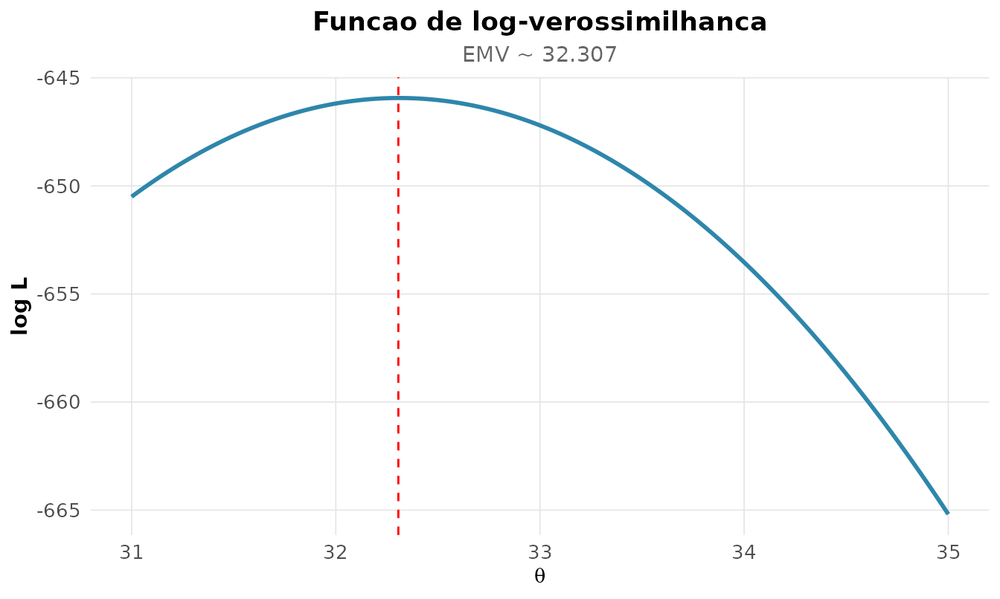

Dos dados a populacao
Inferencia e o salto do que observamos (a amostra) para o que
queremos saber (a populacao). E o curso mais importante de um
bacharelado em estatistica, e tambem o mais mal-interpretado. Usaremos
MASS::Pima.tr: dados reais de 200 mulheres da etnia Pima,
com medidas clinicas e diagnostico de diabetes.
dados <- MASS::Pima.tr
rnp_descritiva(dados$bmi)[c("n_validos", "media", "desvio", "se_media")]
#> # A tibble: 1 × 4
#> n_validos media desvio se_media
#> <dbl> <dbl> <dbl> <dbl>
#> 1 200 32.3 6.13 0.434Estimacao pontual: dois caminhos
Estimar um parametro pontualmente pode ser feito por maxima verossimilhanca (EMV) — o valor que torna os dados observados mais provaveis — ou pelo metodo dos momentos. Para o IMC, supondo Normal:
x <- dados$bmi
ll <- function(th) sum(dnorm(x, th[1], th[2], log = TRUE))
rnp_emv(ll, inicio = c(30, 5), nomes = c("media", "desvio"))$estimativas
#> # A tibble: 2 × 6
#> parametro estimativa erro_padrao z ic_inf ic_sup
#> <chr> <dbl> <dbl> <dbl> <dbl> <dbl>
#> 1 media 32.3 0.432 74.7 31.5 33.2
#> 2 desvio 6.11 0.306 20.0 5.52 6.71A EMV nao da apenas o estimador: a curvatura da log-verossimilhanca no maximo (a informacao de Fisher) fornece o erro-padrao. Quanto mais “afilada” a verossimilhanca, mais informacao os dados trazem e menor a incerteza:
rnp_log_verossimilhanca(function(mu) sum(dnorm(x, mu, sd(x), log = TRUE)),
intervalo = c(31, 35))
Intervalo de confianca: o que ele realmente significa
rnp_ic_media(dados$bmi)
#> # A tibble: 1 × 7
#> media erro_padrao limite_inferior limite_superior n nivel_confianca
#> <dbl> <dbl> <dbl> <dbl> <dbl> <dbl>
#> 1 32.3 0.434 31.5 33.2 200 0.95
#> # ℹ 1 more variable: distribuicao <chr>Aqui mora a interpretacao mais distorcida da estatistica. Um IC de 95% para a media NAO significa “ha 95% de probabilidade de a media verdadeira estar neste intervalo”. A media verdadeira e uma constante fixa — ou esta, ou nao esta.
A interpretacao frequentista correta: se repetissemos o estudo muitas vezes e construissemos um IC a cada vez, 95% desses intervalos conteriam a media verdadeira. A confianca esta no procedimento, nao neste intervalo particular.
Teste de hipoteses e o p-valor
Sera que o IMC medio dessa populacao difere de 30 (limiar de obesidade)?
rnp_teste_t(dados$bmi, mu = 30)
#> # A tibble: 1 × 10
#> estatistica gl p_valor media_x media_y diff ic_inf ic_sup hipotese_nula
#> <dbl> <dbl> <dbl> <dbl> <dbl> <dbl> <dbl> <dbl> <dbl>
#> 1 5.33 199 0 32.3 NA 2.31 31.5 33.2 30
#> # ℹ 1 more variable: alternativa <chr>Agora o conceito mais escorregadio de todos. O p-valor e:
a probabilidade de observar uma estatistica tao ou mais extrema que a obtida, supondo H0 verdadeira.
O que o p-valor NAO e:
- Nao e a probabilidade de H0 ser verdadeira.
- Nao e a probabilidade de o resultado ter sido “sorte”.
- Um p < 0,05 nao mede o tamanho nem a importancia do efeito — apenas a evidencia contra H0.
E os dois tipos de erro que rondam toda decisao:
- Erro tipo I (): rejeitar H0 sendo ela verdadeira (falso positivo).
- Erro tipo II (): nao rejeitar H0 sendo ela falsa (falso negativo).
Poder: a face esquecida do teste
O poder () e a probabilidade de detectar um efeito que existe de fato. Estudos com pouco poder produzem tanto falsos negativos quanto achados “significativos” que nao se replicam. Quantos sujeitos precisamos para detectar um efeito medio (d de Cohen = 0,5) com 80% de poder?
rnp_tamanho_amostra_teste(efeito = 0.5, poder = 0.8, tipo = "duas")
#> # A tibble: 1 × 5
#> efeito poder_alvo alpha n poder_obtido
#> <dbl> <dbl> <dbl> <int> <dbl>
#> 1 0.5 0.8 0.05 64 0.802A curva de poder mostra o trade-off entre tamanho amostral e capacidade de deteccao:
rnp_poder_teste(efeito = 0.5, n = 30, tipo = "duas")$grafico
Planejar o poder ANTES de coletar dados e o que separa pesquisa seria de pescaria de p-valores.
Quando nao ha formula: o bootstrap
Para a media, o erro-padrao tem formula fechada (). Mas e para a mediana, ou para um quantil? O bootstrap de Efron resolve por reamostragem: reamostra-se a propria amostra com reposicao milhares de vezes e observa-se a variabilidade da estatistica.
rnp_ic_bootstrap(dados$bmi, estatistica = "mediana", B = 1000, tipo = "percentil")
#> # A tibble: 1 × 5
#> estimativa limite_inferior limite_superior metodo conf
#> <dbl> <dbl> <dbl> <chr> <dbl>
#> 1 32.8 31.6 33.8 percentil 0.95Nenhuma suposicao de normalidade foi feita — o bootstrap deixa os dados falarem. E o canivete da inferencia moderna para estatisticas sem teoria assintotica amigavel.
Comparando grupos sem assumir normalidade: permutacao
Diabeticas e nao-diabeticas diferem na glicose? Em vez de confiar no TCL, o teste de permutacao constroi a distribuicao nula embaralhando os rotulos — inferencia exata, baseada apenas na troca de etiquetas sob H0:
g1 <- dados$glu[dados$type == "Yes"]
g0 <- dados$glu[dados$type == "No"]
rnp_teste_permutacao(g1, g0, B = 2000)
#> # A tibble: 1 × 4
#> diff_observada p_valor B alternativa
#> <dbl> <dbl> <dbl> <chr>
#> 1 32.0 0 2000 bilateralSintese: o “kit” da inferencia madura
| Conceito | O que e | Erro comum |
|---|---|---|
| Verossimilhanca | plausibilidade dos dados sob | confundir com probabilidade de |
| IC de 95% | 95% dos intervalos cobririam o parametro | “95% de chance de estar aqui” |
| p-valor | P(dados | H0) | “P(H0 | dados)” |
| Poder | P(detectar efeito real) | ignora-lo no planejamento |
| Bootstrap | EP por reamostragem | so usar quando ha formula |
Dominar o que cada numero significa — nao apenas como calcula-lo — e o que distingue o estatistico do operador de software.